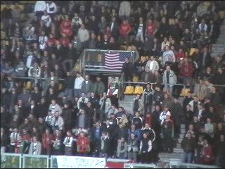
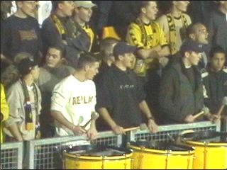
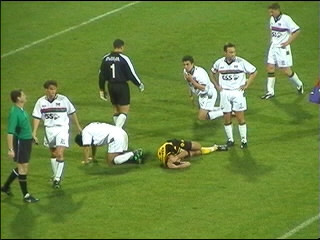
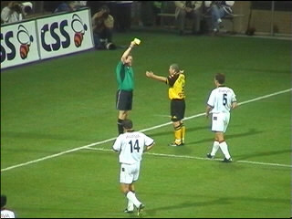
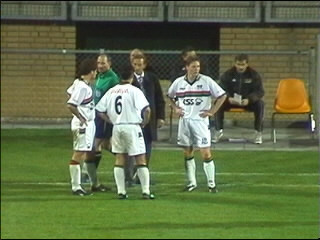
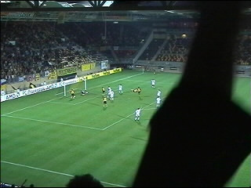
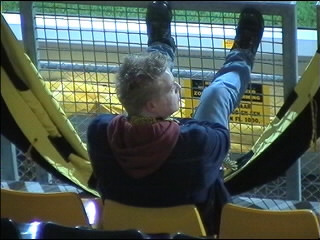

|
Roda JC - NEC 0-0 26 oktober 2001 |

Veel NEC-supporters. Een groep van 60-70 man
van hen had 's middags in Roda-café De Sjtomerij
vernielingen aangericht.

Het trommelcorps op west.

Drie man hebben koppijn na een luchtduel.

Nadat Soetaers het hoofd van doelman Gentenaar
heeft geschampt, trekt Sterk de gele kaart.

Om de hoofdwond van Gentenaar te hechten wordt
de wedstrijd 8 minuten stilgelegd. Mooie kans
voor Neeskens om zijn spelers bij te praten.

Uit een reboundsituatie tikt Anastasiou de bal in
het net. Helaas vanuit buitenspelpositie waardoor
het gejuich weer snel verstomt.

De amusementswaarde was vrijwel nihil. En wat
kun je dan beter doen dan in je hangmat muffen?
©KPD